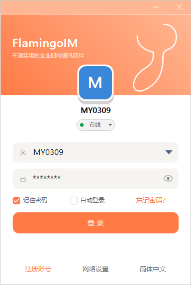
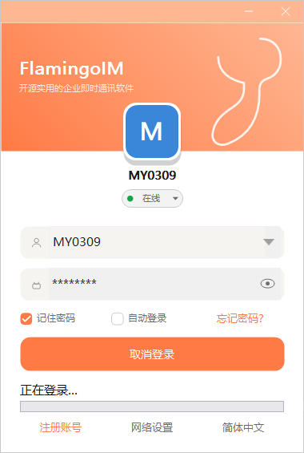
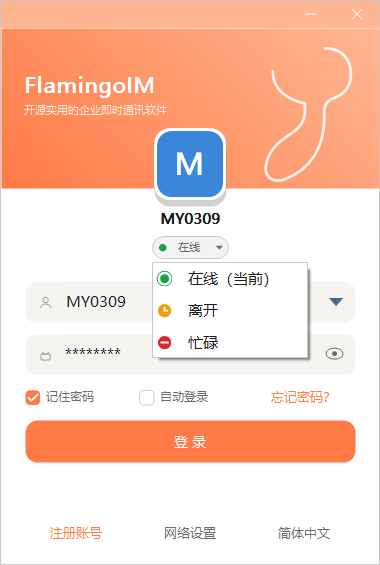
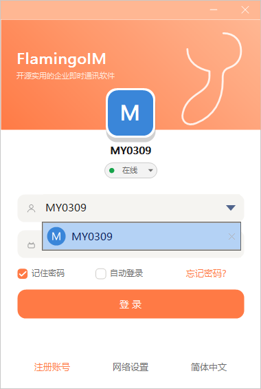
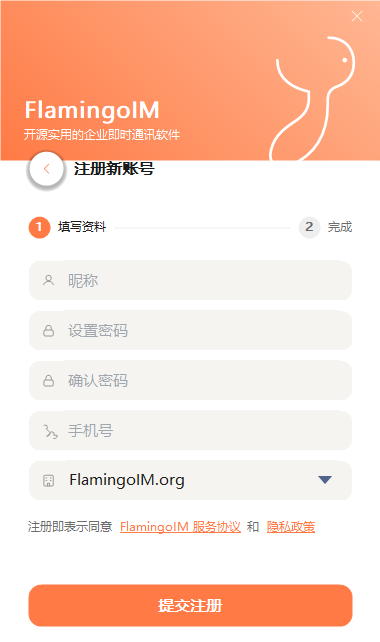
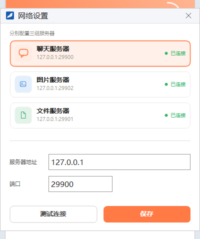
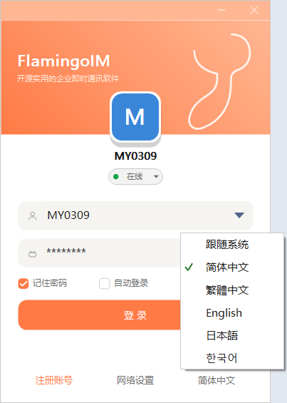

快速开始：登录与注册
本章介绍第一次使用 FlamingoIM 客户端时要做的几件事：确认服务器地址、登录账号、选择登录状态，以及在没有账号时自助注册。
- 适用：全体员工
- 需要：管理员提供的账号与初始密码，或允许自助注册
启动客户端
双击安装目录里的 Flamingo.exe 启动客户端，屏幕中央会出现登录窗口。客户端是绿色程序，整个程序目录可以复制到其他电脑直接运行，不需要额外安装运行库。
登录

1 2 3 4 5 6 7 8 9 10- 登录状态：登录后显示给同事的在线状态
- 账号：工号账号或手机号，右侧箭头展开历史账号
- 密码：右侧眼睛图标可临时显示明文
- 记住密码：下次打开时自动填入密码
- 自动登录：启动客户端后直接登录
- 忘记密码：查看找回密码的办法
- 登录：开始登录
- 注册账号：自助注册新账号
- 网络设置：配置服务器地址
- 界面语言：切换客户端的显示语言
登录步骤
- 在 账号 框中输入你的账号。账号由企业管理员分配，形如
MY0309；也可以直接输入绑定的手机号。 - 在 密码 框中输入密码。
- 按需勾选 记住密码 和 自动登录。在公用电脑上请不要勾选。
- 点 登 录。登录过程中按钮会变成 取消登录，下方显示「正在登录…」进度条，需要中止时点它即可。

登录成功后登录窗关闭，屏幕上出现主面板，下一章「认识主面板」会详细介绍它。
选择登录状态
点头像下方的状态胶囊（默认显示 在线），可以在登录前选好状态：

| 状态 | 同事看到的效果 |
|---|---|
| 在线 | 头像右下角显示绿点，消息正常提醒 |
| 离开 | 显示黄色时钟，表示暂时不在电脑前；可以在设置里开启「离开时自动回复」 |
| 忙碌 | 显示红色标记，提醒同事你正在忙；可以开启「忙碌时自动回复」 |
登录后还可以随时在主面板头部或托盘菜单里切换状态，那里另外提供 离线（对同事显示为离线）。
切换与删除历史账号
同一台电脑上登录过的账号会保存在账号框的下拉列表里。点账号框右侧的箭头即可选择其他账号；把鼠标移到某个账号上点右侧的删除按钮，可以把它从列表中移除，此时还可以勾选「同时删除该账号在本机的聊天记录与缓存」。

忘记密码
点 忘记密码？ 会提示「请联系企业管理员重置密码」。企业管理员可以在管理控制台为你重置登录密码（见「组织架构与员工」），拿到新密码后请尽快在客户端里修改为自己的密码（见「个人资料与账号」）。
注册新账号
如果企业允许员工自助注册，可以在登录窗点 注册账号 自己开通账号：

- 填写 昵称，即同事看到的名字，建议使用真实姓名。
- 两次输入相同的密码。
- 填写手机号。注册成功后既可以用系统分配的账号登录，也可以用这个手机号登录。
- 确认公司名称。这里要填写公司全称，必须与管理员在系统里登记的名称完全一致，默认值由管理员预先设置。
- 点 提交注册。成功页会显示系统为你生成的账号，点 立即登录 会把账号自动填回登录窗。
网络设置
客户端要连接三组服务器：聊天服务器、图片服务器和文件服务器。点登录窗的 网络设置（登录后也可以从主面板的系统菜单进入）打开设置窗口：

- 点选要修改的服务器卡片，卡片右侧显示 已连接、连接中 或 未连接。
- 在下方填入管理员提供的 服务器地址 和 端口。
- 点 测试连接 确认能连通。
- 点 保存，本次登录即生效。
示例截图中的端口是演示环境的端口，实际取值以管理员提供的为准。
切换界面语言
登录窗右下角的链接显示当前语言（如 简体中文），点它可以选择 跟随系统、简体中文、繁體中文、English、日本語 或 한국어。切换后客户端会询问是否立即重启，重启后生效。登录后也可以在「系统设置 → 通用 → 语言」中修改。

FlamingoLang.dll 提供。程序目录里没有这个文件时，客户端只显示简体中文，语言链接也会隐藏。